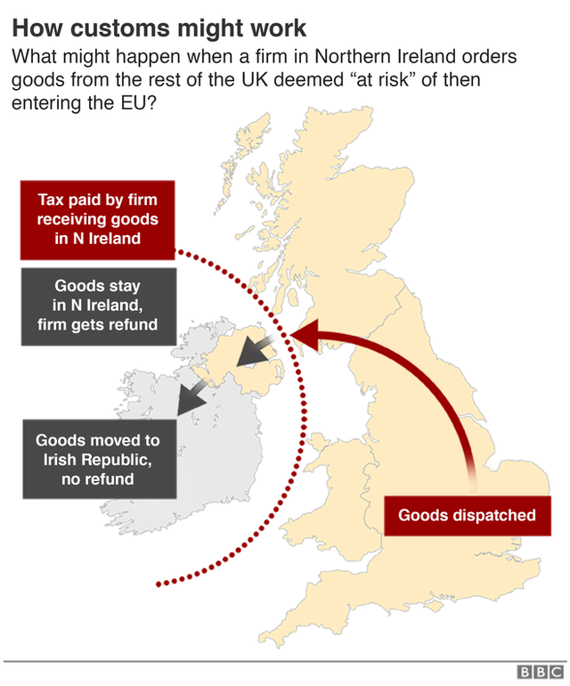

The deadline is fast approaching to agree the rules for the new UK-EU relationship. The changes will affect many areas of life - including trade and immigration - and will start on 1 January 2021.
Yes, the UK left the EU on 31 January with a deal called the withdrawal agreement.
However, its purpose was to set out a process to allow the UK to leave the EU as smoothly as possible - not the terms of the future relationship. It covered things like:
Negotiations aimed at agreeing the new relationship - including a trade deal, but also rules in areas like fishing access, the regulation of medicine, and security co-operation - were always intended to be held after Brexit day and during the transition.
The transition is an 11-month phase which started immediately after Brexit day.
During transition the UK still follows EU rules and trade between the two is the same as before. The UK also continues to pay into the EU budget.
By keeping most things the same, the idea behind the transition period was to give both sides breathing space to negotiate their future relationship.
The transition period ends on 31 December 2020 and the deadline for extending it has now passed.
When transition ends on 31 December, the UK will automatically drop out of the EU's main trading arrangements (the single market and the customs union).
The single market means that countries share the same rules on product standards and access to services, whereas the customs union is an agreement between EU countries not to charge taxes (tariffs) on each other's goods.
However, if a new UK-EU trade deal is not agreed in time then tariffs and border checks would be applied to UK goods travelling to the EU - under the rules of the World Trade Organization. The UK also decides what tariffs and checks to impose on EU goods.
Tariffs would make UK goods more expensive and harder to sell in the EU, while full border checks could cause long delays at ports.
Failure to reach a deal would also result in the UK service industry losing its guaranteed access to the EU. This would affect everyone from bankers and lawyers, to musicians and chefs.
Even if a trade deal is reached, it would not eliminate all checks - so UK businesses will need to prepare.
As well as trade, other aspects of the future relationship - including fishing access and security co-operation - also need to be signed off. If not, then no-deal plans will be needed in these areas for 1 January.
Any trade deals the UK strikes with non-EU countries will be allowed to start from 1 January (ie once the UK has left the EU customs union). Brexit supporters have long argued that allowing the UK freedom to set its own trade policy will benefit the economy - although critics say it's more important to remain close to the EU.
Following Brexit, the 310-mile border between Northern Ireland and the Republic of Ireland is the only land border between the UK and the EU.
All sides wants to avoid border checks given the previous history of conflict - known as The Troubles. However, finding a solution proved very difficult during the initial negotiations.
Theresa May, the previous UK prime minister, came up with a plan called the Irish "backstop". However, she was forced to resign after many of her MPs argued her deal would have kept the UK too closely tied to the EU.
In October 2019, Boris Johnson, Mrs May's successor, scrapped the backstop and replaced it with the Northern Ireland (NI) protocol.
Under the NI protocol, which will start on 1 January 2021, Northern Ireland will continue to follow some EU rules - making border checks unnecessary.
However, the arrangement will mean that certain goods arriving in Northern Ireland from other parts of the UK (England, Scotland and Wales) will need to be checked to ensure they comply with EU standards. If any taxes (tariffs) need to be paid, they will be refunded if the goods remain in Northern Ireland and there is no onward movement to the Republic of Ireland.
In September 2020, the UK government said it was seeking to change parts of the NI protocol by introducing a new law in Parliament. The UK government says this is needed in order to clarify parts of the protocol in order to avoid disruption on 1 January.
The UK government has acknowledged that its proposal would break international law in a "very specific and limited way".